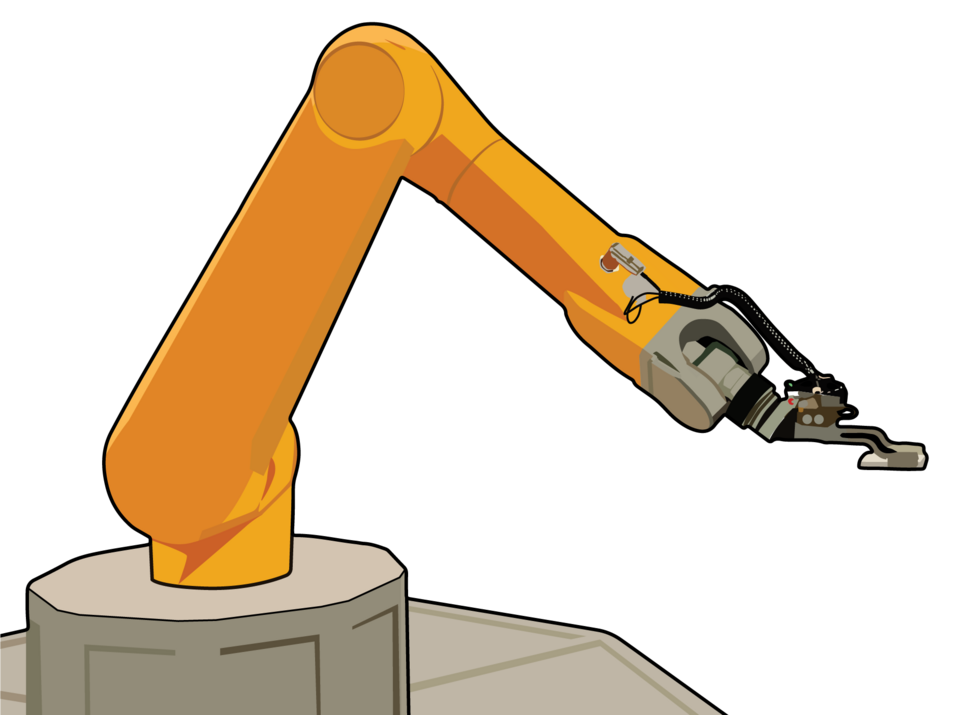

Build a mathematical model建立數學模型
Two link lengths and two angles determine a point in the plane. The physical arm becomes a map from an angle pair to a coordinate pair.
兩條連桿的長度與兩個角度可決定平面上一個點。機械臂因而變成一個由角度對映射至座標對的數學模型。
00 · INTRODUCTION00 · 導論
A robot arm gives us a concrete way to study functions and their inverses. Joint angles determine a position easily; reversing that relationship raises richer questions about existence, uniqueness and multiple solutions.
機械臂提供了一個具體情境，讓我們研究函數與逆問題。由關節角度求位置很直接；反過來由位置求角度，卻會引出解是否存在、是否唯一，以及為何會有多個解。
THE MATHEMATICAL QUESTION數學核心問題
Two link lengths and two angles determine a point in the plane. The physical arm becomes a map from an angle pair to a coordinate pair.
兩條連桿的長度與兩個角度可決定平面上一個點。機械臂因而變成一個由角度對映射至座標對的數學模型。
Every chosen pair (θ₁,θ₂) produces exactly one end point (x,y). This is a familiar function: one input gives one output.
每一組 (θ₁,θ₂) 都只會產生一個末端位置 (x,y)。這是熟悉的函數概念：一個輸入對應一個輸出。
Starting from (x,y), there may be two angle pairs, one boundary pair, or no pair at all. IK therefore asks about existence and number of preimages—not only calculation.
從 (x,y) 反求時，可能對應兩組角度、邊界上的一組，或完全沒有。因此 IK 不只是計算，還在研究原像是否存在及其數量。
TWO DIRECTIONS兩個方向
If the joint angles are already known, FK calculates where the end effector will be. For a simple arm, this is a direct substitution into sine and cosine formulas.
若關節角度已知，FK 計算末端將到達哪裏。對簡單機械臂而言，這通常是把角度直接代入正弦、餘弦公式。
F(θ₁,θ₂) = (x,y)
If the desired position is known, IK finds joint angles that reach it. This direction is more subtle: the target may have two solutions, one solution, or no solution.
若已知希望位置，IK 反求能到達該處的關節角度。這個方向更複雜：一個目標可能有兩個解、一個解，也可能沒有解。
F⁻¹(x,y) = { (θ₁,θ₂) }
FK substitutes numbers into formulas and always produces one point. IK must first test whether a solution exists, then choose between branches when several solutions exist. This makes inverse kinematics a compact study of inverse problems, domains, geometry and multiplicity.
FK 把數值代入公式，一定產生一個點。IK 卻必須先判斷解是否存在；若有多個解，還要分開不同分支。因此它是一個精簡而完整的逆問題例子，連結定義域、幾何與解的重數。
THE ARGUMENT推理路線
T=(x,y)r=√(x²+y²)|L₁−L₂| ≤ r ≤ L₁+L₂θ₂, then θ₁0, 1 or 2 solutions
THE MODEL IN THIS WEBSITE本網站的模型
This introduction is designed for curious secondary-school students. It keeps the robot simple enough to solve by hand while preserving the central inverse-kinematics ideas used by larger systems.
這份內容是為初中至高中程度的學生而設。模型足夠簡單，可以用紙筆推導；同時仍保留大型機器人系統中最核心的逆運動學思想。
Pythagoras, circles and intersections, the law of cosines, and basic trigonometry.勾股定理、圓與交點、餘弦定理，以及基礎三角學。
Can the arm reach the target? Which angles work? Why can there be two answers—or none?機械臂能否到達目標？哪些角度有效？為何會有兩個解，甚至沒有解？
Drag a target, watch the geometry change, then follow an interactive notebook that derives the equations.先拖動目標並觀察幾何變化，再用互動筆記逐步推導公式。